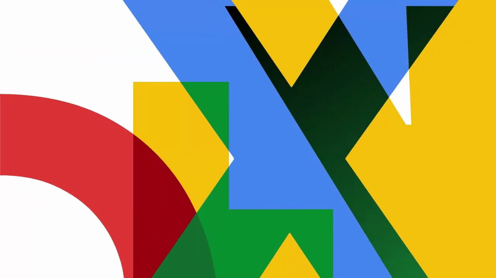
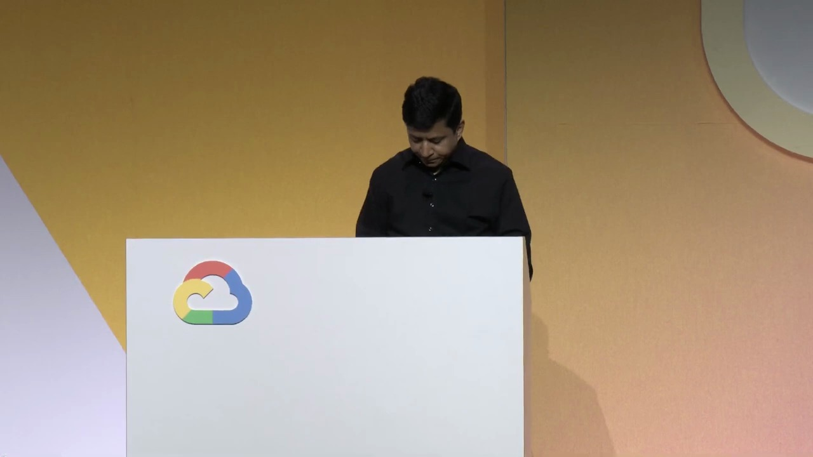
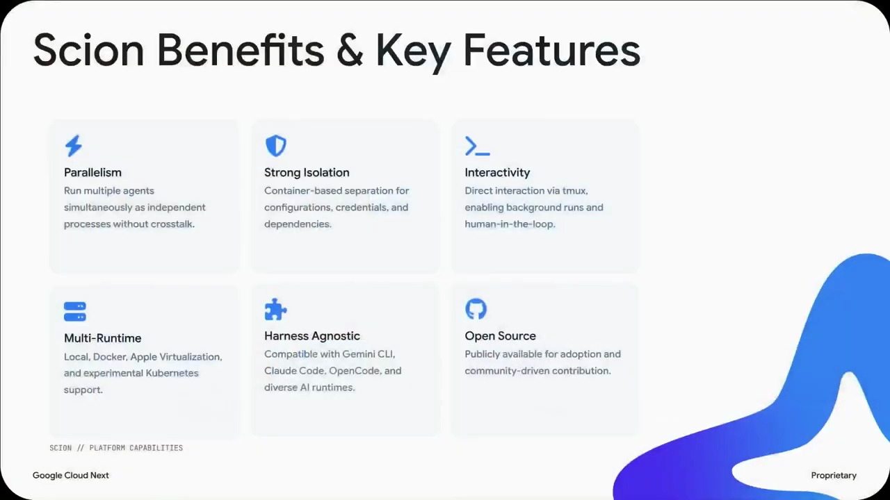
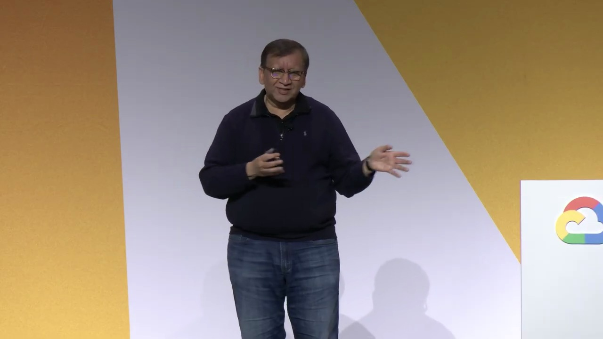
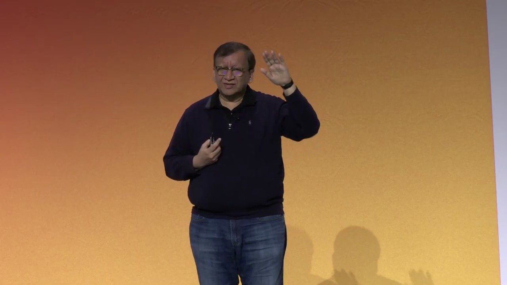
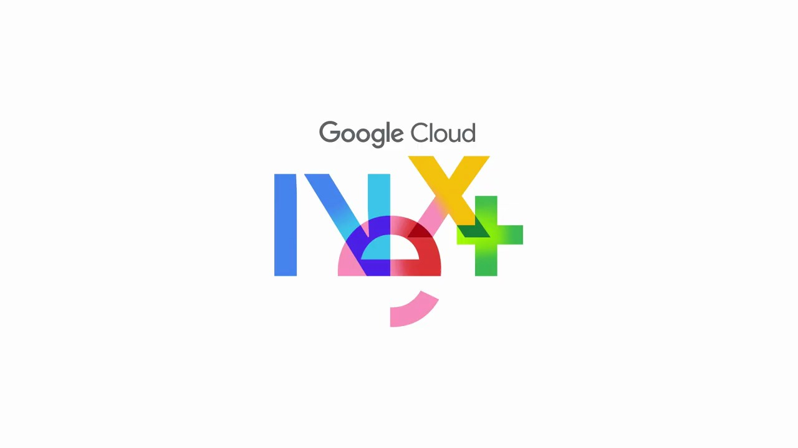

Key Moments






Summary & Script
The agentic shift in software development life cycle
Source: https://www.youtube.com/watch?v=161TA9Z0vxk
Video ID: 161TA9Z0vxk
Overview
The session explores the agentic shift in the software development lifecycle, focusing on how AI agents are increasingly used to write, review, and orchestrate code. The speakers present adoption trends, challenges of managing multiple agents, and introduce Cyan—an open‑source, container‑based hypervisor for securely orchestrating concurrent LLM agents. A demo shows how Cyan isolates agent work, runs parallel agents, and integrates their output back into developers’ codebases, paving the way for moving AI‑generated code into production.
Topics Covered
- AI adoption in development – DORA surveys show ~90 % of developers now use AI; 70 % for new‑code (green‑field) work, with Google reporting 75 % of new code generated by AI.
- Agents vs. prompts – Evolution from simple prompt‑response to “plan‑and‑execute” agents that can ask clarifying questions and act autonomously within a human‑in‑the‑loop workflow.
- Challenges of multi‑agent systems – Isolation, security (agents going rogue), conflict between agents, and tight coupling of agents to specific LLM models.
- Cyan framework – Open‑source “hypervisor of agents” that runs each agent in its own container, providing isolation, ephemerality, and the ability to orchestrate many agents in parallel.
- Demo walkthrough – Installing Cyan, configuring multiple model images, spawning a Python‑generating agent, detaching it, and verifying that its files remain isolated from the developer’s workspace.
- Multi‑agent orchestration – Agents can spawn sub‑agents, converge, or diverge; Cyan can manage any topology regardless of underlying models.
- Production pipeline considerations – Rakkesh Duper discusses moving AI‑generated code through the full CI/CD pipeline, emphasizing that speed gains must be matched by smooth deployment to production.
Key Takeaways
- AI is now an amplifier for developers: clean context yields high‑quality code, but poor context propagates errors.
- Agentic workflows replace iterative prompting with more autonomous, conversational agents capable of handling end‑to‑end tasks.
- Isolation & security are critical; containerized agents prevent rogue behavior from affecting the main codebase.
- Cyan provides a vendor‑agnostic, open‑source solution to orchestrate multiple agents safely and in parallel.
- The framework is model‑agnostic—supports Google Gemini, Open AI, and other LLMs via container images.
- Developers can detach agents, let them run asynchronously, and later merge their outputs, preserving workflow continuity.
- To realize AI‑driven productivity gains, organizations must integrate agents into the full CI/CD pipeline, not just the coding stage.
Notable Quotes
- “The primary role of AI in software development is that of an amplifier… if your context is clean, the goodness spreads; if not, the mess spreads.”
- “Think of Cyan as a hypervisor of agents—just as a VM hypervisor manages OS instances, Cyan manages a fleet of isolated AI agents.”
- “We’re not at fully self‑driving code yet; we still need a human in the loop, but agents are getting close.”
- “If an agent goes rogue, it won’t impact your main workspace because it runs in its own container.”
Podcast Script
JORDAN: Hey everyone, welcome back to the podcast! I’m Jordan, your go‑to for the nitty‑gritty of how things work.
MIKE: And I’m Mike, here to paint the big picture and why you should care. Today we’re diving into the “agentic shift” in software development that Google just unveiled at Cloud Next.
JORDAN: Right, the talk was all about AI agents, multi‑agent orchestration, and getting AI‑generated code into production safely. The presenter mentioned a 75% adoption rate for AI‑written new code at Google—huge jump from just 25% a year ago.
MIKE: That’s massive. Imagine half the code you write being auto‑generated. The question on everyone’s mind: how do we keep that code reliable, secure, and actually deployable?
JORDAN: The key term they used was “amplifier.” AI boosts the signal when your context and intent are clean, but it can amplify noise if you’re vague. So proper prompts and clear specs become critical.
MIKE: Makes sense. It’s like giving a GPS a precise destination versus just “somewhere nice.” If the input’s fuzzy, you’ll end up in a ditch—aka buggy code.
JORDAN: Exactly. Then they introduced a framework called “Cyan”—pronounced “can”—which acts as a hypervisor for agents. It spins each agent in its own container, isolating it from your main workspace.
MIKE: So it’s like running each AI buddy in its own sandbox, preventing one rogue agent from trashing your whole repo. That’s a relief for teams worried about security.
JORDAN: The demo showed a single agent creating a Python script for Fibonacci numbers, running in a detached T‑max session. The file persisted even after the agent stopped, proving ephemerality of the environment but durability of the output.
MIKE: That’s neat because you can let the agent do its thing, walk away, and still get the code later to review, test, and merge. No more “I lost the AI output when the terminal closed.”
JORDAN: They also highlighted parallel execution: multiple agents can be launched, each with its own model—Gemini, Claude, open‑source LLMs—thanks to the container approach.
MIKE: Parallelism could slash development cycles dramatically. Think of a full stack app where one agent drafts the frontend, another the backend, a third writes tests, all at once.
JORDAN: But there are challenges—agent isolation, security, and model‑agent coupling. Without a framework, agents could conflict or overstep each other’s responsibilities.
MIKE: That’s where Cyan’s orchestration shines. It gives you a single control plane to manage who does what, when, and with which resources, kind of like Kubernetes for AI agents.
JORDAN: Another point: the solution is open source and “harness‑agnostic,” meaning you can plug in any LLM or custom model. You just spin up the container image mapped to the model and you’re good to go.
MIKE: Open source means the community can extend it, add new agents, and share best practices—crucial for adoption beyond Google’s internal teams.
JORDAN: To wrap up, the takeaways are: AI is now an amplifier, not a replacement; isolation via containers keeps agents safe; and Cyan provides a hypervisor‑style orchestration layer for multi‑agent workflows, making production pipelines faster and more reliable.
MIKE: And for you listening, the future of dev work looks like a collaborative dance with AI agents—if you set the stage right, you’ll get higher velocity without sacrificing quality. Thanks for tuning in, and we’ll catch you next time!